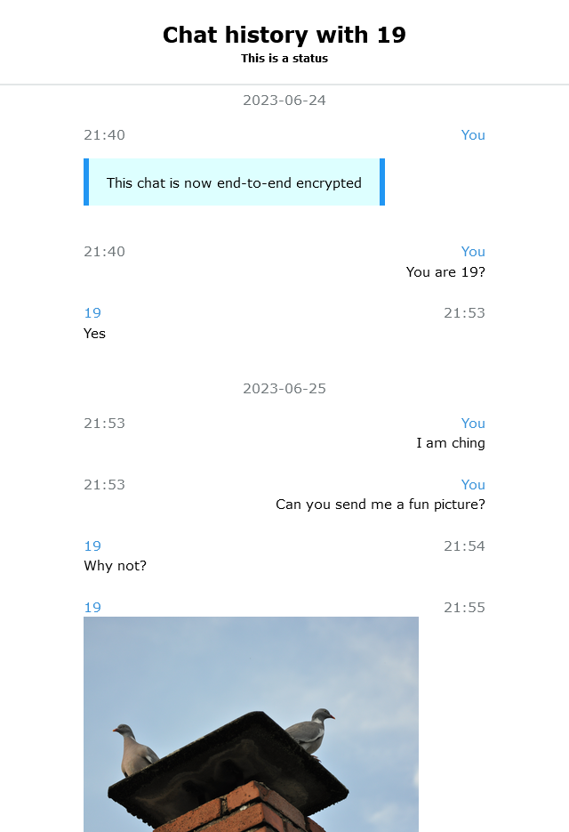

Key Features
Cross-Platform
Support for both Android and iOS/iPadOS WhatsApp databases
Backup Decryption
Support for Crypt12, Crypt14, and Crypt15 (End-to-End) encrypted backups
Multiple Formats
Export your chats in HTML, JSON, and text formats
Customizable
Use custom HTML templates and styling for your chat exports
Media Support
Properly handles and organizes your media files in the exports
Filtering Options
Filter chats by date, phone number, and more
Whatsapp-Chat-Exporter
A customizable Android and iPhone Whatsapp database parser that will give you the history of your Whatsapp conversations in HTML and JSON. Inspired by Telegram Chat Export Tool.
Tip
If you plan to uninstall WhatsApp or delete your WhatsApp account, please make a backup of your WhatsApp database. You may want to use this exporter again on the same database in the future as the exporter develops.
If you would like to support this project, all you need to do is to contribute or share this project! If you think otherwise and want to make a donation, please refer to the Donation Guide.
To contribute, see the Contributing Guidelines.
Usage
Note
Usage in README may be removed in the future. Check the usage in Wiki
Click here for the most trivia way for exporting from Android
First, install the exporter by:
pip install whatsapp-chat-exporter
pip install whatsapp-chat-exporter[android_backup] :; # Optional, if you want it to support decrypting Android WhatsApp backup.
Then, create a working directory in somewhere you want
mkdir working_wts
cd working_wts
Tip
macOS users should grant Full Disk Access to Terminal in the Security & Privacy settings before using the exporter.
Working with Android
Unencrypted WhatsApp database
Extract the WhatsApp database with whatever means, one possible means is to use the WhatsApp-Key-DB-Extractor. Note that the extractor only works on Android 4.0 to 13.
After you obtain your WhatsApp database, copy the WhatsApp database and media folder to the working directory. The database is called msgstore.db. If you also want the name of your contacts, get the contact database, which is called wa.db. And copy the WhatsApp (Media) directory from your phone directly.
And now, you should have something like this in the working directory.

Extracting
Simply invoke the following command from shell.
wtsexporter -a
Enriching Contact from vCard
The default WhatsApp contact database typically contained contact names extracted from your phone, which the exporter used to map your chats. However, in some reported cases, the database may have never been populated. In such case, you can export your contacts to a vCard file from your phone or a cloud provider like Google Contacts. Then, install the necessary dependency and run the following command from the shell:
pip install whatsapp-chat-exporter["vcards"]
wtsexporter -a --enrich-from-vcards contacts.vcf --default-country-code 852
Encrypted Android WhatsApp Backup
In order to support the decryption, install pycryptodome if it is not installed
pip install pycryptodome # Or
pip install whatsapp-chat-exporter["android_backup"] # install along with this software
Tip
Crypt15 is now the easiest way to decrypt a backup. If you have the 32 bytes hex key generated when you enable End-to-End encrypted backup, you can use it to decrypt the backup. If you do not have the 32 bytes hex key, you can still use the key file extracted just like extacting key file for Crypt12 and Crypt14 to decrypt the backup.
Crypt12 or Crypt14
You will need the decryption key file from your phone. If you have root access, you can find it as /data/data/com.whatsapp/files/key. Otherwise, if you used WhatsApp-Key-DB-Extractor before, it will appear in the WhatsApp backup directory as WhatsApp/Databases/.nomedia.
Place the decryption key file (key) and the encrypted WhatsApp Backup (msgstore.db.crypt14) in the working directory. If you also want the name of your contacts, get the contact database, which is called wa.db. And copy the WhatsApp (Media) directory from your phone directly.
And now, you should have something like this in the working directory.

Extracting
Simply invoke the following command from shell.
wtsexporter -a -k key -b msgstore.db.crypt14
Crypt15 (End-to-End Encrypted Backup)
To support Crypt15 backup, install javaobj-py3 if it is not installed
pip install javaobj-py3 # Or
pip install whatsapp-chat-exporter["crypt15"] # install along with this software
Before proceeding with this method, you must first create an end-to-end encrypted backup. For detailed instructions, refer to WhatsApp's help center.
Once you have copied the backup files to your computer, place the encrypted WhatsApp backup file (msgstore.db.crypt15) into the working directory. If you also wish to include your contacts' names, obtain the contact database file, named wa.db. Additionally, copy the WhatsApp Media folder directly from your phone.
If you do not have the 32 bytes hex key (64 hexdigits), place the decryption key file (encrypted_backup.key) extracted from Android. If you gave the 32 bytes hex key, simply put the key in the shell.
Now, you should have something like this in the working directory (if you do not have 32 bytes hex key).

Extracting
If you do not have 32 bytes hex key but have the key file available, simply invoke the following command from shell.
wtsexporter -a -k encrypted_backup.key -b msgstore.db.crypt15
If you have the 32 bytes hex key, simply put the hex key in the -k option and invoke the command from shell like this:
wtsexporter -a -k 133735053b5204b08e5c3823423399aa30ff061435ab89bc4e6713969cda1337 -b msgstore.db.crypt15
Working with iOS/iPadOS (iPhone or iPad)
Do an iPhone/iPad Backup with iTunes/Finder first.
- iPhone backup on Mac: https://support.apple.com/HT211229
- iPhone backup on Windows: https://support.apple.com/HT212156
- iPad backup: https://support.apple.com/guide/ipad/ipad9a74df05xx/ipados
Encrypted iOS/iPadOS Backup
Note
If you are working on unencrypted iOS/iPadOS backup, skip this.
If you want to work on an encrypted iOS/iPadOS Backup, you should install iphone_backup_decrypt from KnugiHK/iphone_backup_decrypt before you run the extract_iphone_media.py.
pip install git+https://github.com/KnugiHK/iphone_backup_decrypt
Note
You will need to disable the built-in end-to-end encryption for WhatsApp backups. See WhatsApp's FAQ for how to do it.
Extracting
To extract messages from iOS/iPadOS backups, run the following command in the shell, making sure to replace the username and device ID with the correct values. Keep in mind that there are at least two possible paths for the backups on Windows.
Windows
# Possible path one
wtsexporter -i -b "C:\Users\[Username]\AppData\Roaming\Apple Computer\MobileSync\Backup\[device id]"
# Possible path two
wtsexporter -i -b "C:\Users\[Username]\Apple\MobileSync\Backup\[device id]"
Mac
wtsexporter -i -b ~/Library/Application\ Support/MobileSync/Backup/[device id]
Results
After extracting, you will get this:

More options
Invoke the wtsexporter with --help option will show you all options available.
> wtsexporter --help
usage: wtsexporter [-h] [-a] [-i] [-e EXPORTED] [-w WA] [-m MEDIA] [-b BACKUP] [-d DB] [-k [KEY]]
[--call-db [CALL_DB_IOS]] [--wab WAB] [-o OUTPUT] [-j [JSON]] [--txt [TEXT_FORMAT]] [--no-html]
[--size [SIZE]] [--avoid-encoding-json] [--pretty-print-json [PRETTY_PRINT_JSON]] [--per-chat]
[--import] [-t TEMPLATE] [--offline OFFLINE] [--no-avatar] [--experimental-new-theme]
[--headline HEADLINE] [-c] [--create-separated-media] [--time-offset {-12 to 14}] [--date DATE]
[--date-format FORMAT] [--include [phone number ...]] [--exclude [phone number ...]]
[--dont-filter-empty] [--enrich-from-vcards ENRICH_FROM_VCARDS]
[--default-country-code DEFAULT_COUNTRY_CODE] [-s] [--check-update] [--assume-first-as-me]
[--business] [--decrypt-chunk-size DECRYPT_CHUNK_SIZE]
[--max-bruteforce-worker MAX_BRUTEFORCE_WORKER]
A customizable Android and iOS/iPadOS WhatsApp database parser that will give you the history of your WhatsApp
conversations in HTML and JSON. Android Backup Crypt12, Crypt14 and Crypt15 supported.
options:
-h, --help show this help message and exit
Device Type:
-a, --android Define the target as Android
-i, --ios Define the target as iPhone/iPad
-e, --exported EXPORTED
Define the target as exported chat file and specify the path to the file
Input Files:
-w, --wa WA Path to contact database (default: wa.db/ContactsV2.sqlite)
-m, --media MEDIA Path to WhatsApp media folder (default: WhatsApp)
-b, --backup BACKUP Path to Android (must be used together with -k)/iOS WhatsApp backup
-d, --db DB Path to database file (default: msgstore.db/7c7fba66680ef796b916b067077cc246adacf01d)
-k, --key [KEY] Path to key file. If this option is set for crypt15 backup but nothing is specified, you will
be prompted to enter the key.
--call-db [CALL_DB_IOS]
Path to call database (default: 1b432994e958845fffe8e2f190f26d1511534088) iOS only
--wab, --wa-backup WAB
Path to contact database in crypt15 format
Output Options:
-o, --output OUTPUT Output to specific directory (default: result)
-j, --json [JSON] Save the result to a single JSON file (default if present: result.json)
--txt [TEXT_FORMAT] Export chats in text format similar to what WhatsApp officially provided (default if present:
result/)
--no-html Do not output html files
--size, --output-size, --split [SIZE]
Maximum (rough) size of a single output file in bytes, 0 for auto
JSON Options:
--avoid-encoding-json
Don't encode non-ascii characters in the output JSON files
--pretty-print-json [PRETTY_PRINT_JSON]
Pretty print the output JSON.
--per-chat Output the JSON file per chat
--import Import JSON file and convert to HTML output
HTML Options:
-t, --template TEMPLATE
Path to custom HTML template
--offline OFFLINE Relative path to offline static files
--no-avatar Do not render avatar in HTML output
--experimental-new-theme
Use the newly designed WhatsApp-alike theme
--headline HEADLINE The custom headline for the HTML output. Use '??' as a placeholder for the chat name
Media Handling:
-c, --move-media Move the media directory to output directory if the flag is set, otherwise copy it
--create-separated-media
Create a copy of the media seperated per chat in <MEDIA>/separated/ directory
Filtering Options:
--time-offset {-12 to 14}
Offset in hours (-12 to 14) for time displayed in the output
--date DATE The date filter in specific format (inclusive)
--date-format FORMAT The date format for the date filter
--include [phone number ...]
Include chats that match the supplied phone number
--exclude [phone number ...]
Exclude chats that match the supplied phone number
--dont-filter-empty By default, the exporter will not render chats with no valid message. Setting this flag will
cause the exporter to render those. This is useful if chat(s) are missing from the output
Contact Enrichment:
--enrich-from-vcards ENRICH_FROM_VCARDS
Path to an exported vcf file from Google contacts export. Add names missing from WhatsApp's
default database
--default-country-code DEFAULT_COUNTRY_CODE
Use with --enrich-from-vcards. When numbers in the vcf file does not have a country code, this
will be used. 1 is for US, 66 for Thailand etc. Most likely use the number of your own country
Incremental Merging:
--incremental-merge Performs an incremental merge of two exports. Requires setting both --source-
dir and --target-dir. The chats (JSON files only) and media from the source
directory will be merged into the target directory. No chat messages or media
will be deleted from the target directory; only new chat messages and media
will be added to it. This enables chat messages and media to be deleted from
the device to free up space, while ensuring they are preserved in the exported
backups.
--source-dir SOURCE_DIR
Sets the source directory. Used for performing incremental merges.
--target-dir TARGET_DIR
Sets the target directory. Used for performing incremental merges.
Miscellaneous:
-s, --showkey Show the HEX key used to decrypt the database
--check-update Check for updates (require Internet access)
--assume-first-as-me Assume the first message in a chat as sent by me (must be used together with -e)
--business Use Whatsapp Business default files (iOS only)
--decrypt-chunk-size DECRYPT_CHUNK_SIZE
Specify the chunk size for decrypting iOS backup, which may affect the decryption speed.
--max-bruteforce-worker MAX_BRUTEFORCE_WORKER
Specify the maximum number of worker for bruteforce decryption.
WhatsApp Chat Exporter: 0.13.0rc1 Licensed with MIT. See https://wts.knugi.dev/docs?dest=osl for all open source
licenses.
Verifying Build Integrity
To ensure that the binaries provided in the releases were built directly from this source code via GitHub Actions and have not been tampered with, GitHub Artifact Attestations is used. You can verify the authenticity of any pre-built binaries using the GitHub CLI.
Note
Requires version 0.13.0rc1 or newer. Legacy binaries are unsupported.
Using Bash (Linux/WSL/macOS)
for file in wtsexporter*; do ; gh attestation verify "$file" -R KnugiHK/WhatsApp-Chat-Exporter; done
Using PowerShell (Windows)
gci "wtsexporter*" | % { gh attestation verify $_.FullName -R KnugiHK/WhatsApp-Chat-Exporter }
Python Support Policy
This project officially supports all non-EOL (End-of-Life) versions of Python. Once a Python version reaches EOL, it is dropped in the next release. See Python's EOL Schedule.
Legal Stuff & Disclaimer
This is a MIT licensed project.
The Telegram Desktop's export is the reference for whatsapp.html in this repo.
bplist.py was released by Vladimir "Farcaller" Pouzanov under MIT license.
Please also refer to any files prefixed with LICENSE to obtain copies of the various licenses.
WhatsApp Chat Exporter is not affiliated, associated, authorized, endorsed by, or in any way officially connected with the WhatsApp LLC, or any of its subsidiaries or its affiliates. The official WhatsApp LLC website can be found at https://www.whatsapp.com/.